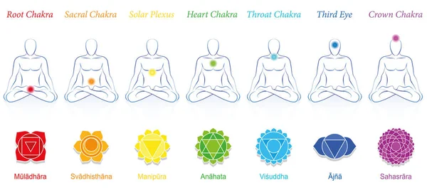

Reiki
El Reiki es una práctica espiritual con las dimensiones basadas en la materia y espíritu, caracterizado por la imposición de manos con el fin de restablecer el equilibrio del cuerpo. Este es uno de los métodos curativos más antiguos de que la humanidad tiene conocimiento

Masaje Tailandés
Este tipo de masaje es una secuencia de presiones sobre puntos y meridianos, compresiones circulatorias, movilizaciones articulares, estiramientos, y estimulaciones reflejas. Todo ello encadenado en un ritmo regular, donde la respiración del masajista se armoniza con la del paciente. El masaje se aplica a todo el cuerpo, desde los dedos de los pies hasta el cráneo. Su trabajo se centra en eliminar toxinas, liberando el Qi y ofreciendo al receptor del masaje una sensación profunda de paz tanto en su cuerpo como en su mente.

Registros Akashicos
Según la tradición hindú, los registros akáshicos son los archivos de las memorias del alma. No es un espacio físico de esta dimensión, sino energético, sin medidas de tiempo (no existe el ayer o el hoy), donde se guardan los archivos que contienen la historia de toda la existencia. Todos los seres tienen su registro.

Terapia Sacrouterina
La terapia sacro uterina es una herramienta tantrica que trabaja a niveles energéticos en el proceso depurativo de memorias emocionales y sexuales. Permitiendo de éste modo la renovación de nuestras aguas fértiles y creativas, devolviéndonos la posibilidad de fluir en el presente, honrando la mujer/hombre/ser. Trayendo al conciente las memorias de dolor y/o apego que habitan en nuestra matriz, podemos trabajar con ellas de forma clara, amorosa y haciendo más fácil la transmutación y liberación de esos bloqueos.